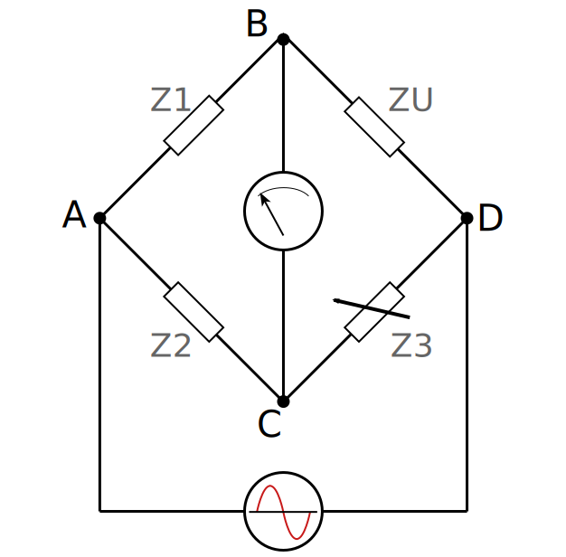
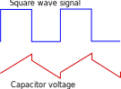
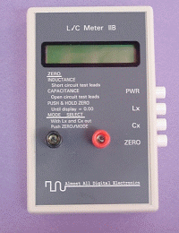
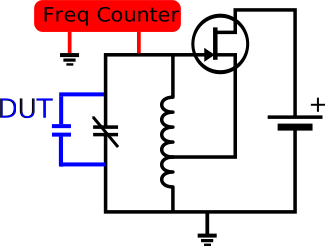
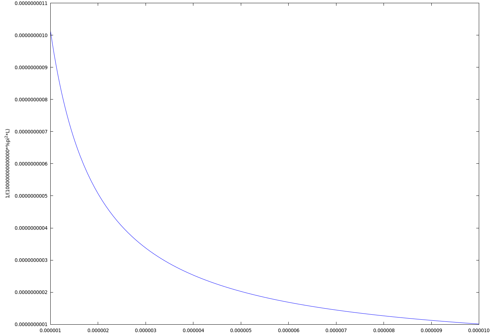

<!doctype html>
<html lang="en">
  <head>
    <meta charset="utf-8">

    <title>Measuring Small Capacitances</title>

    <meta name="author" content="Doug Hoyte">

    <meta name="apple-mobile-web-app-capable" content="yes" />
    <meta name="apple-mobile-web-app-status-bar-style" content="black-translucent" />

    <meta name="viewport" content="width=device-width, initial-scale=1.0, maximum-scale=1.0, user-scalable=no, minimal-ui">

    <link rel="stylesheet" href="../reveal.js/css/reveal.css">
    <link rel="stylesheet" href="../reveal.js/css/theme/black.css" id="theme">

    <!-- Code syntax highlighting -->
    <link rel="stylesheet" href="../reveal.js/lib/css/zenburn.css">

    <!-- Printing and PDF exports -->
    <script>
      var link = document.createElement( 'link' );
      link.rel = 'stylesheet';
      link.type = 'text/css';
      link.href = window.location.search.match( /print-pdf/gi ) ? '../reveal.js/css/print/pdf.css' : '../reveal.js/css/print/paper.css';
      document.getElementsByTagName( 'head' )[0].appendChild( link );
    </script>

    <!--[if lt IE 9]>
    <script src="../reveal.js/lib/js/html5shiv.js"></script>
    <![endif]-->

    <style>
      .reveal .slides h1, .reveal .slides h2, .reveal .slides h3 {
        text-transform: none;
      }

      .two-column {
        display: flex;
        flex-wrap: wrap;
      }

      .two-column em {
        margin: 20px;
      }
    </style>
  </head>

  <body>
    <div class="reveal">
      <div class="slides">

<!------------------------------------------------------->


<section data-markdown><script type="text/template">

# Measuring Small Capacitances

Doug Hoyte

VE3HOY

</script></section>


<section data-markdown><script type="text/template">

## LCR Meters

* Originally I was going to discuss a bunch of ways that LCR meters work. However there is far too much material to fit into a short talk!
* Instead, I'll do a brief overview of:
  * Bridge method
  * Square-wave method
* And deep dive into:
  * Resonance method

</script></section>


<section data-markdown><script type="text/template">

## Bridge Method

<div style="display: flex; flex-direction: row; justify-content: space-evenly">
  
  <div style="height: 100%">
    <ul>
      <li>ABD and ACD are voltage dividers</li>
      <li>$Z_3$ is adjusted until meter shows 0 current (or voltage), implying: $${\it {Z_U}\over{Z_1}} = {\it {Z_3}\over{Z_2}}$$</li>
      <li>If $Z_3, Z_2, Z_1$ are known we can compute unknown impedance $Z_U$</li>
    </ul>
  </div>
</div>

</script></section>


<section data-markdown><script type="text/template">

Given a known frequency $f$ and impedance $Z$, capacitance can be computed:

$${\it C}={{1}\over{2\,\pi\,Z\,f}}$$

* Modern designs use an op-amp instead of panel meter
* Requires precisely known resistors and frequency

</script></section>


<section data-markdown><script type="text/template">

## Square wave method

<div style="display: flex; flex-direction: row; justify-content: space-evenly">
  
  <div style="height: 100%; font-size: 90%">
    <ul>
      <li>Applies square wave with known voltage and frequency, measures voltage across capacitor</li>
      <li>Slope of red line corresponds to $C$ (how fast the capacitor charges)</li>
    </ul>
  </div>
</div>

</script></section>


<section data-markdown><script type="text/template">

* Also can measure ESR (the drop-offs on the red line) caused by lead resistance/dielectric heating loss
* Mostly suitable for larger value capacitors since they need to have negligible impedance at square wave's frequency
* I *think* this is how our kit devices we ordered will work (not sure yet)

</script></section>


<section data-markdown><script type="text/template">

## Resonance Method

<div style="display: flex; flex-direction: row; justify-content: space-evenly">
  
  <div style="height: 100%; font-size: 90%">
    <ul>
      <li>Inspired by a really great kit I built years ago: AADE L/C Meter IIB</li>
      <li>Conceptually simple: Inserts capacitors or inductors into a resonant tank circuit and measures frequency shift</li>
      <li>Excellent for small capacitances, even &lt;10 pF</li>
    </ul>
  </div>
</div> 

</script></section>


<section data-markdown><script type="text/template">

## Review: Impedance

Impedance of an inductor increases with frequency:

$${\it Z\_L}=2\,\pi\,L\,f$$

Impedance of a capacitor decreases with frequency:

$${\it Z\_C}={{1}\over{2\,\pi\,C\,f}}$$
</script></section>


<section data-markdown><script type="text/template">

## Review: Resonance

The resonant frequency is the frequency where the impedances are equal:

$$2\,\pi\,L\,f={{1}\over{2\,\pi\,C\,f}}$$

Solving for $f$:

$$f={{1}\over{2\,\pi\,\sqrt{L\,C}}}$$

</script></section>


<section data-markdown><script type="text/template">

## Hartley Oscillator

Simple yet reliable design for LC oscillator:


</script></section>


<section data-markdown><script type="text/template">

## Measurement Concept

* Take a frequency reading: $f\_{before}$
* Connect a capacitor as the DUT (Device Under Test)
* Take another frequency reading: $f\_{after}$
* Infer the capacitance from the change in frequency

</script></section>


<section data-markdown><script type="text/template">

## Test Setup



</script></section>


<section data-markdown><script type="text/template">

## Problem

* Unfortunately, the initial values of L and C aren't known exactly
* Suppose we read 5 MHz on the frequency counter:

$$5\,000\,000 ={{1}\over{2\,\pi\,\sqrt{L\,C}}}$$

</script></section>


<section data-markdown><script type="text/template">

There are an infinite combination of L and C values that can result in this frequency:



(In practice, suitable values are constrained by the oscillator $Q$ value, which is related to $L/C$)

</script></section>


<section data-markdown><script type="text/template">

## Solution: Calibration Step

* Measure frequency before
* Apply a capacitor with known capacitance to the circuit
* Measure frequency after
* Infer $L$ and $C$ of the tank circuit from frequency change

</script></section>


<section data-markdown><script type="text/template">


Using the resonance equation $f={{1}\over{2\,\pi\,\sqrt{L\,C}}}$ with $f\_{before}$ and $f\_{after}$ gives:

$${\it LC\_{before}}={{1}\over{(2\,\pi\,f\_{before})^2}}$$

$${\it LC\_{after}}={{1}\over{(2\,\pi\,f\_{after})^2}}$$

</script></section>


<section data-markdown><script type="text/template">

Because we added the calibration capacitor:

$${\it C\_{after}}={\it C\_{before}}+{\it C\_{known}}$$

Now we can calculate $L$ in terms of known quantities:

$${\it L\,C\_{after}}={\it L\,(C\_{before}}+{\it C\_{known})}$$

$${\it L\,C\_{after}}={\it L\,C\_{before}}+{\it L\,C\_{known}}$$

$${\it L\,C\_{after} - L\,C\_{before}}={\it L\,C\_{known}}$$

$${\it L}={\it {L\,C\_{after} - L\,C\_{before}}\over{C\_{known}}}$$

</script></section>


<section data-markdown><script type="text/template">

With $L$, it's easy to get $C\_{before}$:

$${\it C\_{before}}={\it {L\,C\_{before}}\over{L}}$$

</script></section>


<section data-markdown><script type="text/template">

Now that we have values for $L$ and $C\_{before}$, here is the equation we will use to measure unknown capacitors:

$${\it C\_{unknown}}={{1}\over{(2\,\pi\,f)^2\,L}}-C\_{before}$$

Phew, OK the math is over, let's have a demo!

</script></section>


<script>
function procCalc() {
  var f_before = parseFloat(document.getElementById("f_before").value);
  var c_known = parseFloat(document.getElementById("c_known").value);
  var f_after = parseFloat(document.getElementById("f_after").value);
  var f_measured = parseFloat(document.getElementById("f_measured").value);

  f_before *= 1e6;
  c_known *= 1e-12;
  f_after *= 1e6;
  f_measured *= 1e6;

  var lcb = 1 / (4 * Math.PI**2 * f_before**2);
  var lca = 1 / (4 * Math.PI**2 * f_after**2);

  var l = (lca - lcb) / c_known;
  var c = lcb / l;

  document.getElementById("inductance").innerHTML = (l === l) ? (l * 1e6).toFixed(3) : '??';
  document.getElementById("c_before").innerHTML = (c === c) ? (c * 1e12).toFixed(1) : '??';

  var c_unknown = (1 / (4 * Math.PI**2 * f_measured**2 * l)) - c;

  if (c_unknown === c_unknown) document.getElementById("c_unknown").innerHTML = (c_unknown/1e-12).toFixed(1);
  else document.getElementById("c_unknown").innerHTML = '??';
}
</script>

<section data-markdown><script type="text/template">

### Calibration

<div>
  <div>$f\_{before}$ = <input id="f_before" onKeyUp="procCalc();" /> MHz</div>
  <div>$C\_{known}$ = <input id="c_known" onKeyUp="procCalc();" /> pF</div>
  <div>$f\_{after}$ = <input id="f_after" onKeyUp="procCalc();" /> MHz</div>
</div>

$L$ = <span id ="inductance">??</span> &mu;H, $C$ = <span id ="c_before">??</span> pF

### Measurement

$f\_{measured}$ = <input id="f_measured" onKeyUp="procCalc();" /> MHz

$C\_{unknown}$ = <span id="c_unknown">??</span> pF

</script></section>


<section data-markdown><script type="text/template">

# Thank you

This presentation:<br/>
[https://hoytech.github.io/presentations/lcr-meters/](https://hoytech.github.io/presentations/lcr-meters/)

</script></section>


<!------------------------------------------------------->


      </div>

    </div>

    <script src="../reveal.js/lib/js/head.min.js"></script>
    <script src="../reveal.js/js/reveal.js"></script>

    <script>

      // Full list of configuration options available at:
      // https://github.com/hakimel/reveal.js#configuration
      Reveal.initialize({
        controls: true,
        progress: true,
        history: true,
        center: true,

        transition: 'none', // none/fade/slide/convex/concave/zoom

	math: {
          mathjax: '../lib/MathJax/MathJax.js',
          config: 'TeX-AMS_SVG-full',
	},

        // Optional reveal.js plugins
        dependencies: [
          { src: '../reveal.js/plugin/markdown/marked.js', condition: function() { return !!document.querySelector( '[data-markdown]' ); } },
          { src: '../reveal.js/plugin/markdown/markdown.js', condition: function() { return !!document.querySelector( '[data-markdown]' ); } },
          { src: '../reveal.js/plugin/highlight/highlight.js', async: true, callback: function() { hljs.initHighlightingOnLoad(); } },
          { src: '../reveal.js/plugin/math/math.js', async: true },
        ]
      });

    </script>

  </body>
</html>
